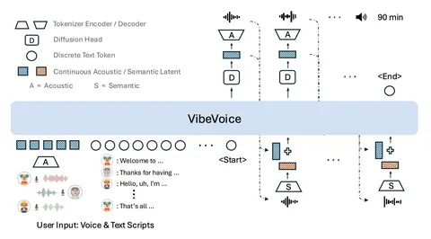

Сегодня разберём статью о новой модели VibeVoice, которая с помощью next-token-диффузии синтезирует длинную речь от лица нескольких спикеров.
Авторы во многом ссылаются на свою предыдущую работу Multimodal Latent Language Modeling with Next-Token Diffusion, но там речь идёт совсем не о natural speech. Два главных преимущества их новой разработки:
— Трансформер, который используется в модели, предсказывает не дискретные токены, а латенты.
— VibeVoice может генерировать аудио длительностью до полутора часов.
Модель принимает на вход голосовые промпты и текстовые описания. Для того чтобы она лучше понимала контекст, авторы применяют два вида токенизации:
— Для дискретных токенов — look-up-table (кодбук, который из токена делает представление). Лосс кросс-энтропийный, получают сэмплированием.
— А для непрерывных данных берут 𝜎-VAE-энкодер, который предсказывает что-то похожее на векторные представления. Лосс — L2-диффузионный.
Диффузионная голова обучается end2end вместе с трансформером — предсказывает вход для VAE по последнему латенту трансформера.
Новая система токенизации сохраняет точность воспроизведения звука и значительно повышает эффективность вычислений при обработке длинных последовательностей. Непрерывность токенов позволяет уменьшить их количество до 7,5 на секунду. Сжатие данных, по сравнению с популярной моделью EnCodec, улучшается в 80 раз.
Посмотреть код и послушать демо можно на GitHub команды.
Евгений Шабалин
